hero_puppet · tried on May, 13 Oct 2026One painting of a hero becomes a small 3D puppet: an AI model builds her shape, Blender gives her a skeleton, and the same Mixamo run our heroes use makes her move. Renders of that puppet then guide the video model that paints her walks, so each walk follows her own body instead of a stranger's stick figure. Everything on this page is the real trial on May: her pictures, her files and the times we measured.
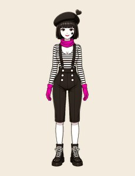
start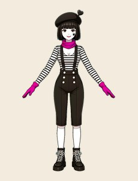
1st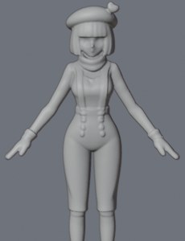
2nd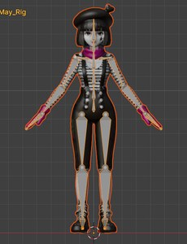
3rd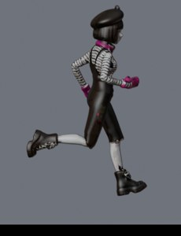
4th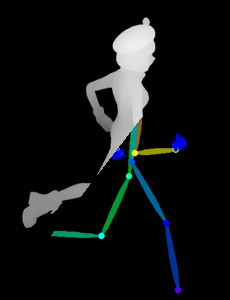
5th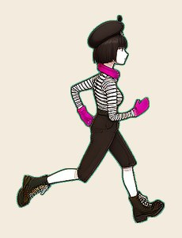
6thThe 7th step compares the new walks with MAY-G's. Tap any picture on this page to see it full size.
for a new puppet look of a hero who already has paintings: about 23 minutes of machine time and a few minutes of your picks.
by eye: the arms-out front, then the side and back, then the better of two 3D shapes. Nothing else waits for you.
of Claude per new puppet look once it runs from the Level Editor. You queue it; the AI server and this PC do the work.
192.168.137.54:8188, which the phone cannot reach from outside the home network.Since pass 71 the Puppet method is a look job like the others: you start it from a hero's page, it runs on the AI server and this PC by itself, and it stops only for your three picks. Shown here on Jeżyk, the second hero to get a puppet (his arms-out paintings, shape, rig, clips and guides took about 9 minutes of machine time).
Choose the method. Open the Level Editor (tools\level_editor.cmd), go to the Heroes tab, press Edit on the hero, then + Generate art… in his Looks. Pick the card Hero: a 3D puppet of the painting walks him (the Puppet method). Like every card it says what it needs, what it makes, how long it takes (about 21 minutes) and what to watch for.
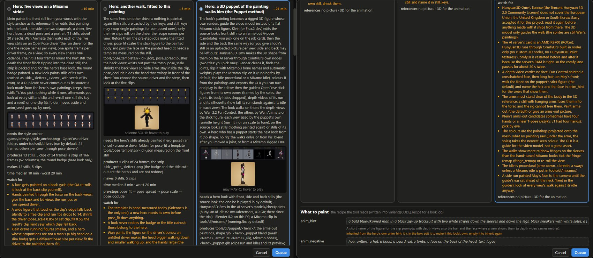
Say what the puppet starts from. "Start from" offers the puppet he already has (whatever is on disk is kept), a new puppet, his .blend after you fixed the rig by hand, or a Mixamo-rigged FBX. A hero who already has a puppet goes straight to the walks: about 11 minutes.
Choose the picture each side of the 3D shape is made from. For the front, the side and the back: paint arms-out locally (an edit of the look's own still, the default), any of the hero's stills from any look as it is, or a picture you uploaded. The words can be changed; empty means the template the trial found. Below them: the painter (Klein, about 20 s a candidate, or Flux.2 dev, 4–5 min a candidate with a restart each), how many fronts to pick from, the screen colour, how many Hunyuan3D tries, the mesh's size.
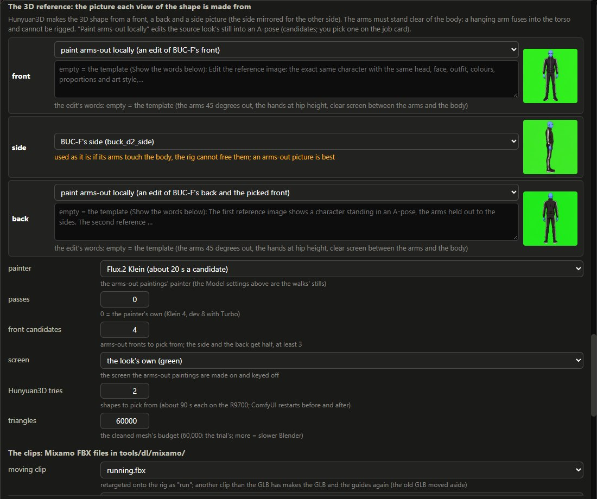
Set the walk. The Mixamo clip and the idle; which views walk on depth and which on the stick figure (ticked = depth; the default is the trial's best: depth for fd, side, bd and back, the stick figure for the front); how the stick figures are framed (by the soles, so the boots stay in the picture); run size from the puppet (each view's walk sized by how tall the 3D puppet's own run stands, instead of a hand-tuned run_scale); the fringe remap; and whether the walks reuse a look's stills or paint new ones.
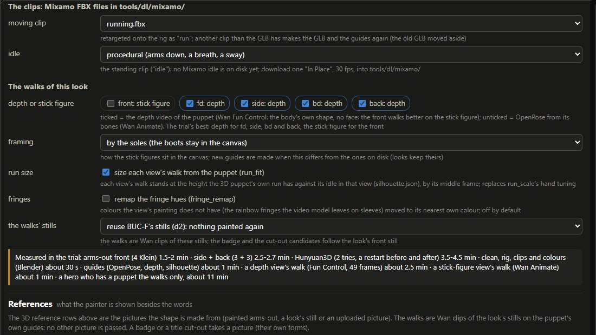
Queue it, then pick when it asks. The job card shows every stage as a chip that fills in as it lands: the arms-out front, side and back, the 3D shape, the rig, the clips and colours (the GLB), the guides, then each walk. When it needs you it stops with Waiting for pick: click the candidate you like, then Pick, or Re-roll 4 more. Every ComfyUI render is linked from the card (↗) and sits in ComfyUI's Workflows sidebar. A stage can be run again from the card; its outputs and everything after it are moved aside first.
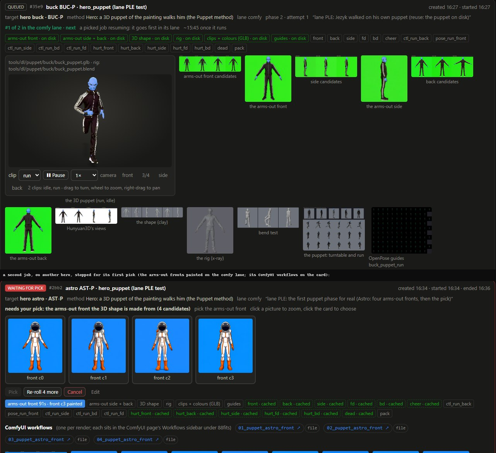
Look at the puppet itself. The hero's Art section shows The 3D puppet: the GLB turning and running in the page (it works offline), with the clip (run or idle), play and pause, the speed, and the camera at front, three-quarter, side or back. Below it: where the .blend is and how to change it, the arms-out picks, the shape in clay, the rig seen through, the turntable, and the guides made from it.
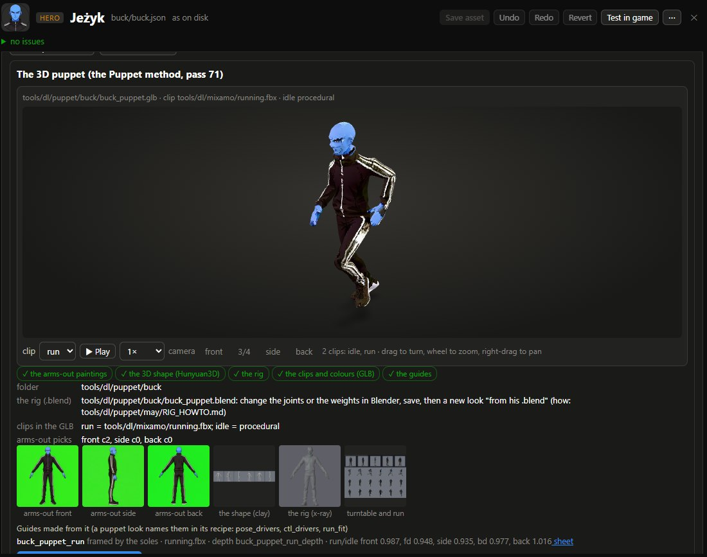
tools/dl/locks/comfy.lock). The local lane does the Blender stages on this PC, so a Blender stage never holds up another job's painting.tools/dl/locks/godot.lock), and only one Level Editor runs the queue (tools/dl/locks/jobs.lock); a second one opens read-only.python tools/puppet.py may runs every stage still missing and stops at each pick (--pick front=1, --pick side=1 back=1, --pick shape=1); --stage <name> --force redoes one stage.A puppet look begins with a look that already has its paintings. For May that is MAY-G: 12 stills painted on Flux.2 dev on 12 October (front, two diagonals, side, back, a cheer, five hurt faces and the dead pose). The two puppet looks, MAY-P and MAY-Q, reuse those stills exactly as they are (their recipe says "stills": "g"), so a puppet look never repaints the hero. Only the walks are new.
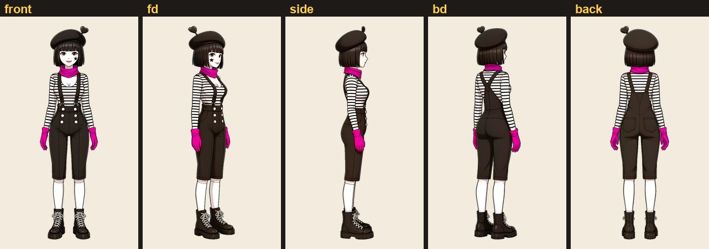
Then a normal hero job paints them first. The painter is your choice, and it is the biggest time lever in the whole method:
| Painter | Per still | 13 stills | Use it |
|---|---|---|---|
| Flux.2 Klein 9B, 4 steps | about 20 s | about 5 min | recommended first fast, holds the style anchor well |
| Flux.2 dev, 30 steps, no Turbo (MAY-G's painter) | 6.5–7.5 min | about 1.5 h | richer detail when Klein's look is not good enough; ComfyUI restarts before every render (measured 383–475 s a still on MAY-G) |
MAY-G's own still workflows, saved by its Level Editor job:
1st step
MAY-G's front still, then her side and back stills.
Klein edits the front into a relaxed A-pose: arms 45 degrees out, legs a little apart. Four seeds; you pick one. Then the side and the back in the same pose, three seeds each; you pick again.
tools/dl/puppet/may/apose_front.png, apose_side.png, apose_back.png: 1024 × 1024 PNG on a blue screen.
Why the arms must be out: an arm that hangs against the body fuses with it in the 3D model, and a fused arm cannot be given its own bones. The same goes for legs pressed together.
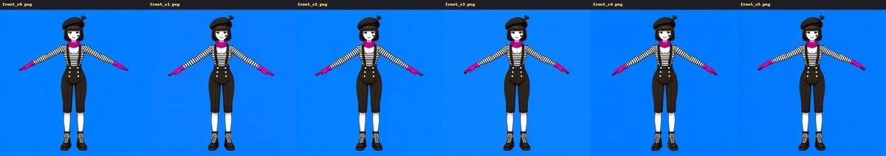
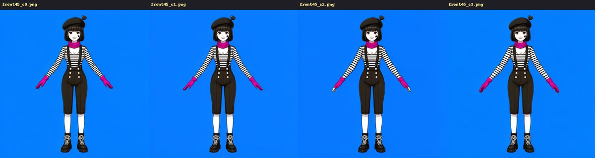
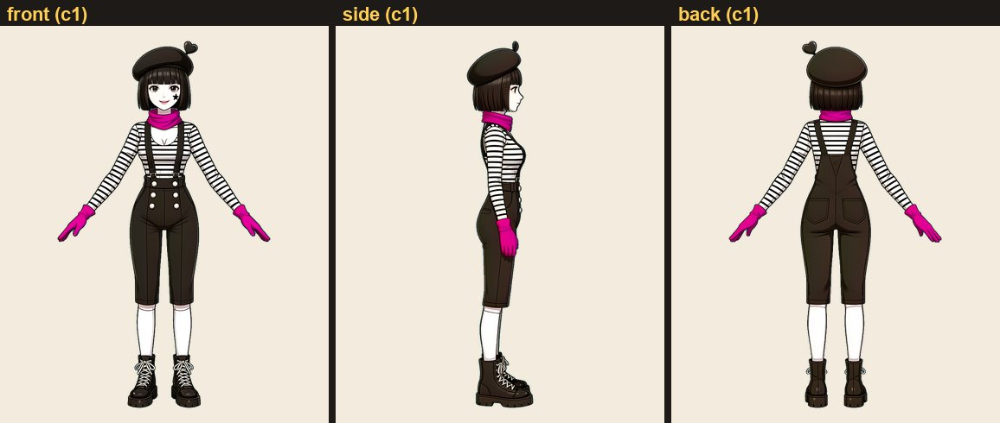
tools/puppet.py uploads the stills to the AI server's ComfyUI (input folder, 88fits/puppet_may_front_ref.png and so on) and builds Klein's edit graph in code (comfy.klein): the 9B model, the Qwen3 8B text encoder, each reference picture fed in as a ReferenceLatent, 4 steps, cfg 1, 1024 × 1024.tools/dl/locks/comfy.lock), so nothing else on the server runs in between. Each candidate is saved as apose/front_cN.png with a .json beside it (seed, words, references, seconds) and a contact sheet front_sheet.png.python tools/puppet.py may --pick front=1, then --pick side=1 back=1.| Painter | Per picture | This step (10 pictures) | Verdict |
|---|---|---|---|
| Flux.2 Klein 9B (used) | 18 s front, 25 s side or back | 4.4 min | recommended keeps the outfit; an edit, not a new painting |
| Flux.2 dev, the job form's default (Turbo, 8 steps) | 4–5 min, a restart each (the form's estimate) | about 40–50 min | not tried for this step; only if Klein loses the outfit |
| Flux.2 dev, 30 steps, no Turbo (MAY-G's painter) | 6.5–7.5 min (measured on MAY-G) | about 65–75 min | the slowest; not tried for this step |
Built exactly as puppet.py built them (same seed, words and pictures) and saved in ComfyUI's Workflows sidebar under 88fits/puppet_may/. They open ready to run.
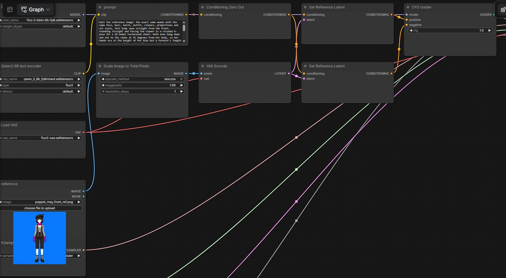
2nd step
The three arms-out paintings, keyed onto white. The side counts twice: as the model's "right" view and, mirrored, as its "left".
Hunyuan3D 2 multi-view turns four views into a grey 3D mesh. Two tries on two seeds; you pick. Blender then tidies the pick.
shape/try_0.glb, try_1.glb (about 4.5 MB each), the pick as shape_raw.glb, and the cleaned shape.glb: one piece, 60,000 vertices, 1.61 m tall.
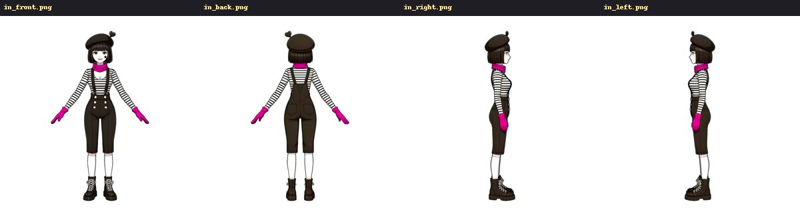
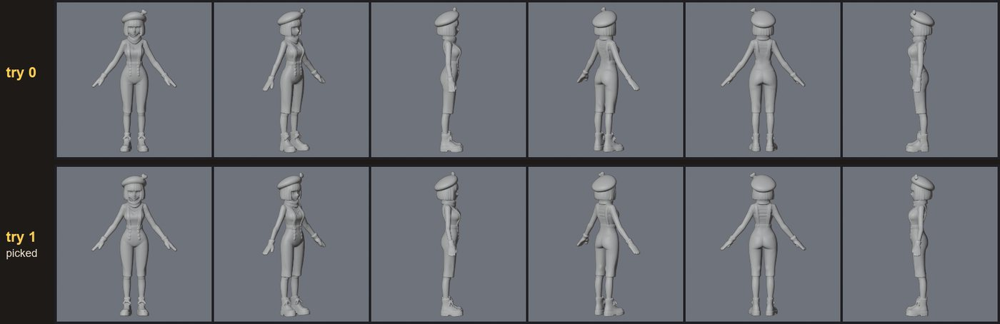
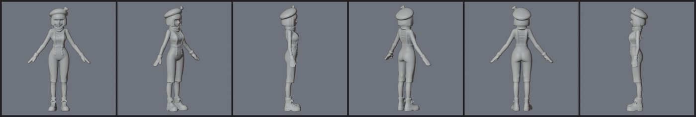
hunyuan3d-dit-v2-mv.safetensors (4.93 GB, Tencent's Hunyuan3D-2mv on Hugging Face, public) in the server's ComfyUI/models/checkpoints/. Nothing was installed into ComfyUI: it already has the nodes.tools/dl/puppet/may/shape/ and Blender renders each try in clay for your pick (python tools/puppet.py may --pick shape=1).tools/puppet_blender.py mode=clean): keeps the largest piece, remeshes it on a 4.5 mm grid, decimates to 60,000 vertices and 80,000 faces, puts the feet at height 0, faces her toward −Y and scales her to her game height. That height is measured from her own sprite: the figure in her back idle cell over the 256 px cell, times the 1.9 m the game draws a cell, = 1.611 m.| Shape model | Time | Verdict |
|---|---|---|
| Hunyuan3D 2 multi-view (used), 2 tries | 91 s and 95 s a try, 3.3 min with both restarts | recommended runs on the R9700 through ComfyUI's own nodes |
| Same model, one try only | about 2 min | fine when the paintings are clean; you lose the choice |
Same model from the front only (--front-only) | about the same per try (not measured) | only if the side and back paintings fail: the back is then guessed |
| More steps or a finer octree | slower, not measured | 30 steps and octree 380 gave enough detail for a sprite |
| TripoSG (MIT licence) | not installed, not tried | the licence-safe swap before a commercial release |
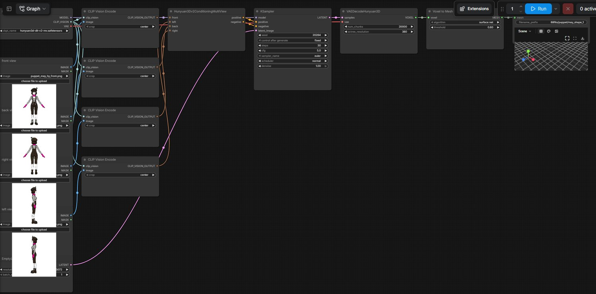
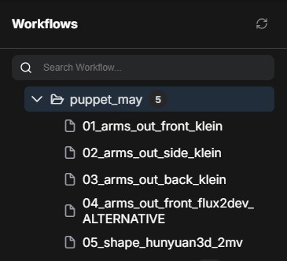
3rd step
shape.glb.
A script finds her joints by slicing the mesh, places a skeleton with Mixamo's bone names there, and lets Blender work out how the mesh follows each bone.
may_puppet.blend: mesh May, skeleton May_Rig (65 bones, mixamorig:Hips …), plus check pictures in rig/.
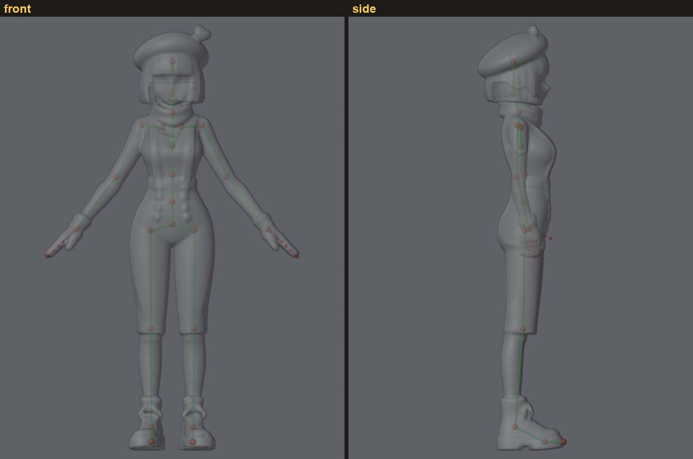
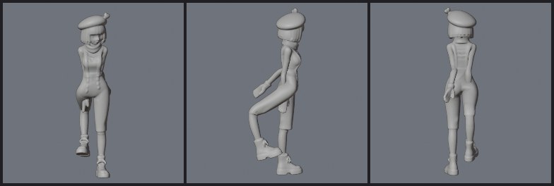
This step is automated: you only need what follows when the automatic rig is wrong, for example an elbow in the wrong place, the torso dragged along by an arm, or the beret not following the head. These are real screenshots of Blender 5.2 with tools/dl/puppet/may/may_puppet.blend.
Open the file. Double-click may_puppet.blend, or File > Open in Blender 5.2.
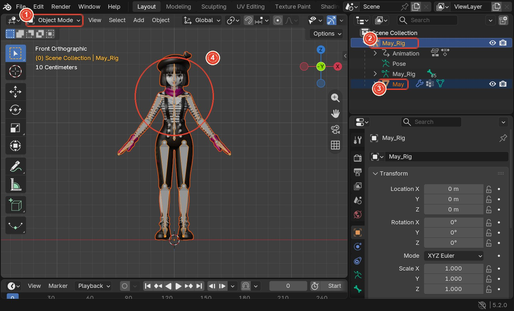
Move a joint. Click May_Rig in the list, press Tab for Edit Mode, click the end of a bone and press G to move it; X, Y or Z after G keeps it on one axis. Tab again when done.
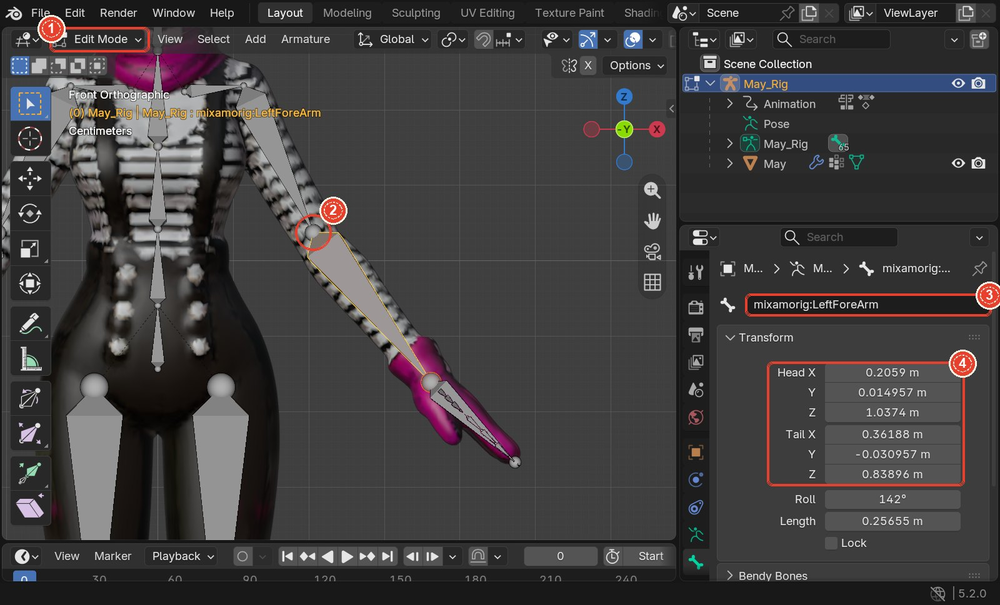
mixamorig:LeftArm meets mixamorig:LeftForeArm.Let Blender redo how the mesh follows. In Object Mode click May, then Shift-click May_Rig (the skeleton last), press Ctrl+P and choose With Automatic Weights.
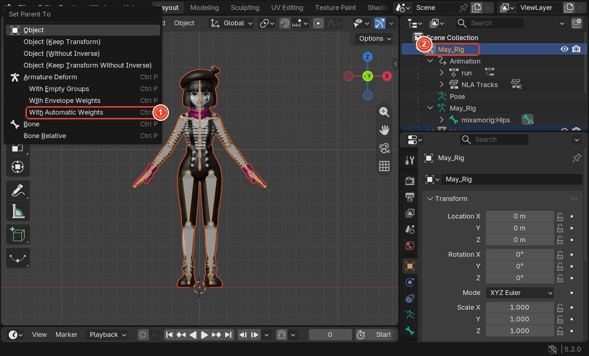
This undoes the trial's "hair and beret on the head only" fix. Paint that back (next step), or rebuild the whole rig instead with python tools/puppet.py may --stage rig --force, which finds the joints again and discards hand edits.
Or paint a fix by hand. Click May, switch to Weight Paint (Ctrl+Tab), pick a bone's group in the list and paint over the mesh.
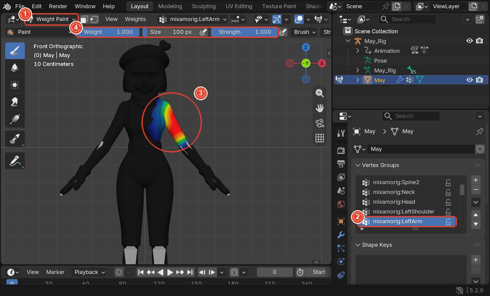
mixamorig:LeftArm, the left upper arm. For the beret it is mixamorig:Head.Typical fixes: the chest moving with an arm (mixamorig:LeftArm too strong on the chest), the overalls stretching with a leg (mixamorig:LeftUpLeg on the hip), the beret left behind (paint it red on mixamorig:Head).
Check that she moves right. Click May_Rig, switch to Pose Mode, set the bottom editor to the Action Editor and pick run (or idle). Space plays, the arrow keys step.
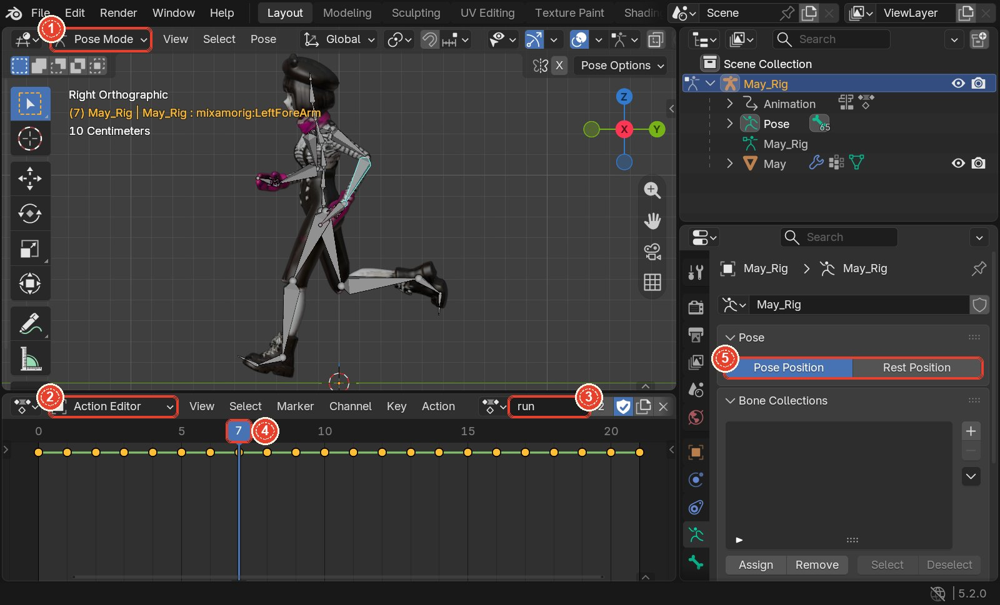
Save and run the rest from your rig. Ctrl+S under the same name, then:
python tools/puppet.py may --from-blend
It skips steps 1 to 3, puts the Mixamo run on your edited skeleton again (moved joints carry the run), recolours, exports the GLB, redraws the guides, re-queues MAY-P and MAY-Q's walks and compares them. Hand changes to the run or idle keys are replaced: change the skeleton and the weights, not the keys.
Export the mesh alone (select May, File > Export > FBX, Selected Objects only, or use shape.glb as it is), upload it to mixamo.com, let its auto-rigger place the markers, and download "FBX Binary, Original Pose, With Skin" (not T-pose: her colours are projected from the arms-out paintings). Then:
python tools/puppet.py may --from-fbx <the downloaded file>
The armature and mesh are renamed May_Rig and May, the bones get the mixamorig: prefix if they lack it, and the rest runs as with --from-blend. Tested on an FBX export of our own rig; a real mixamo.com download has not been tried yet.
| Rig route | Time | Verdict |
|---|---|---|
| The script (used) | 7 s | recommended 0 failures on May; check rig/bendtest.png |
Fix by hand in Blender, then --from-blend | a few minutes (half an hour the first time) + about 15 min to redo steps 4–7 | when one joint or one area is wrong |
mixamo.com, then --from-fbx | a few minutes of upload and download + about 15 min | clean rigs, needs a sign-in; untested with a real download |
4th step
may_puppet.blend, the Mixamo run tools/dl/mixamo/running.fbx (the clip our heroes' run drivers come from), the arms-out paintings.
The run is moved onto her skeleton, an idle is added, and her colours are painted onto the mesh from the arms-out pictures.
may_puppet.glb (4.2 MB, clips run 0.7 s and idle 2 s), may_puppet_preview.png, a copy of both in Drive: My Drive/88fits builds/puppets/.
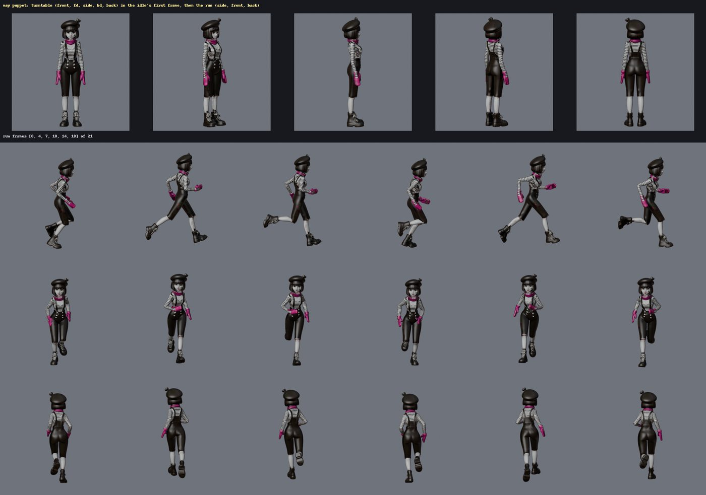
COLOR_0), not a texture.Choices here: the clip (any Mixamo FBX in tools/dl/mixamo/; running.fbx by default) and the idle (made in code, or an FBX). Neither changes the time noticeably.
5th step
The rig and the GLB.
Her run is rendered in our five views (back, back-diagonal, side, front-diagonal, front) through the game camera's 25-degree tilt, 24 poses a stride, as stick figures from her own bones and as depth videos.
tools/dl/drivers/may_puppet_run/ (stick figures), tools/dl/drivers/may_puppet_run_depth/ (depth + clay), silhouette.json.
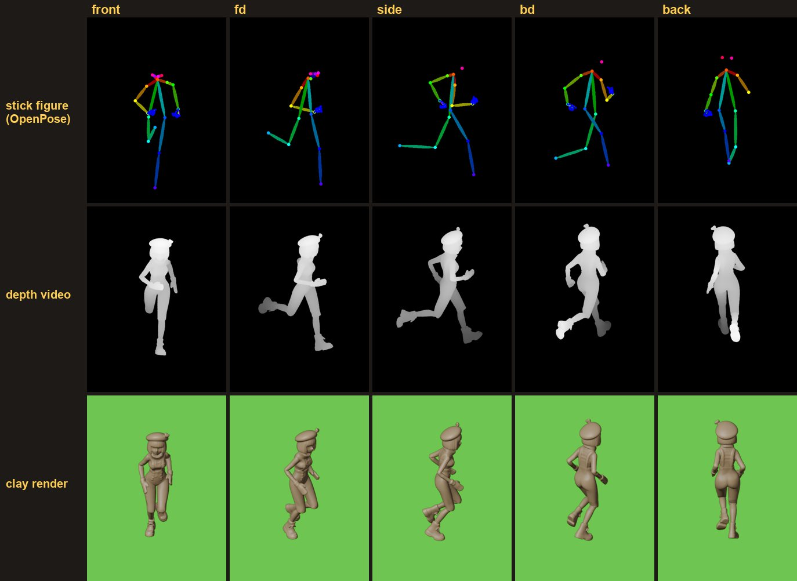
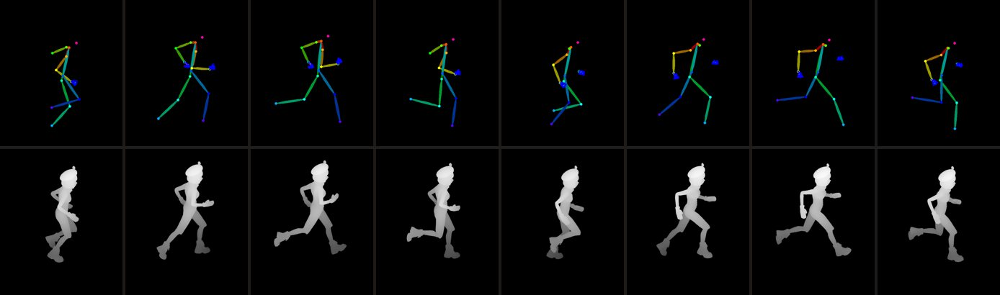
tools/pose_driver.py), so a look's recipe can name the folder per view in pose_drivers. Each view is a folder of driver_00.png … driver_24.png plus poses.json (the joint positions); meta.json and contact sheets sit beside them.tools/blender_depth_drivers.py, the same tool the scorpion and the beetle walk on): ctl_00.png … ctl_48.png per view (two strides and one frame, so the video model can settle on the second) and a clay.png.The first side walk painted May with her face turned to the camera on a body running sideways. A profile rule for the face points did not fix it, nor did levelling the shoulders. Swapping in Mixamo's head points did, which showed the cause: on her own head bone the ear dot sat straight above the neck (her bob pulls the bone back), while Mixamo's sits well ahead of it. The guide now places the ears from her measured nose, the way pose_driver.py does.
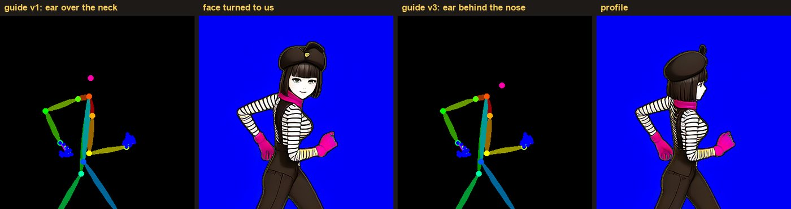
6th step
MAY-G's five view stills and the guides from step 5.
A look job in the Level Editor's queue walks each still along its guide, one view at a time, packs the strip and imports it into the game.
Two new looks in may.json, marked fresh: MAY-P (may_sprite_p.png) and MAY-Q (may_sprite_q.png), 62 columns each.
MAY-P walks every view on the puppet's stick figures with Wan 2.2 Animate. MAY-Q walks the back, back-diagonal, side and front-diagonal on the depth videos with Wan 2.2 Fun Control, and the front on the stick figure (the depth video carries no face, see below). Both have no run_scale: whether the puppet keeps her size by itself was part of the test.
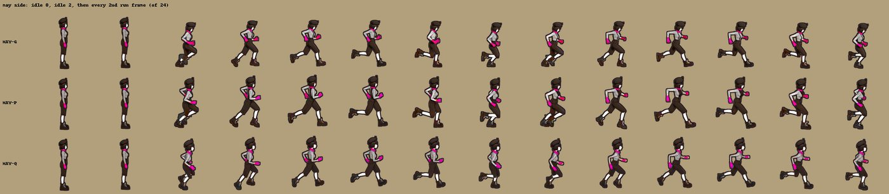
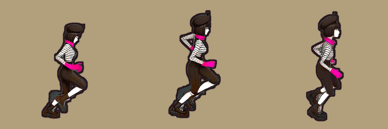
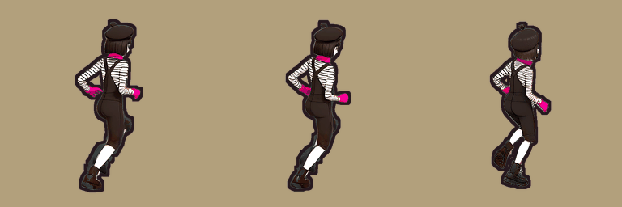
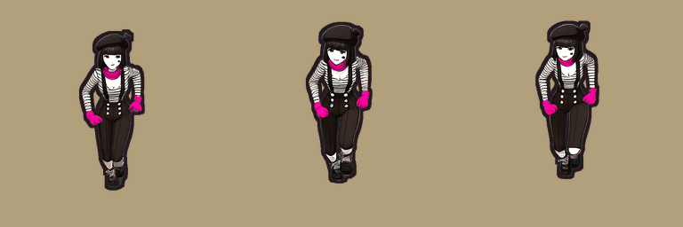
"g", its seeds and words) minus run_scale, and name the guides: pose_drivers = may_puppet_run in every view; for MAY-Q also ctl_drivers = may_puppet_run_depth for fd, side, bd and back, plus words for the face and hair (anim_hint, anim_negative).tools/gen_art.py sends one ComfyUI graph per view. Wan Animate makes 25 frames on 25 stick figures. Fun Control makes 49 frames on the 49 depth frames and keeps the second stride. Each clip is cut out of its blue screen and fitted to the cell (tools/dl/ai_anim/may_mayq_ctl_run_side/full_00.png …, cycle.json, cycle_sheet.png). A clip whose figure leaves the frame is rolled again on another seed automatically.tools/lossy_imports.py sets the new picture's .png.import file to lossy WebP 0.75, so a 62-column strip does not add megabytes to the APK.--import (through tools/godot.sh, which lets only one Godot run at a time) turns the PNG into the texture the game loads, under game/.godot/imported/.tools/import_json.gd writes may.tres again from may.json: the Inspector-editable resource the game reads first.| Video model, guide | Per clip | Five views | Verdict |
|---|---|---|---|
| Wan 2.2 Animate 14B on the stick figure | 55–60 s (25 frames); a job's first clip about 110 s | 9.5 min with retries (MAY-P) | the front view; elsewhere fine, but the front head runs big |
| Wan 2.2 Fun Control 14B on depth | 120–162 s (49 frames) | about 11.5 min | fd, side, bd, back; no face from the front |
| The mix (MAY-Q): depth, stick figure for the front | — | about 11 min | recommended best size and turn-away |
Saved by the Level Editor's look jobs, so each opens exactly what ran. These graphs name their pictures in the server's 88fits input folder, which ComfyUI's picture list does not show: the nodes open marked red. They show every setting, but to run one again from the page, pick the same file name in each red node or run the look from the Level Editor.
From the front, Fun Control painted the near-white head of the depth video as a crosshatched face; another seed gave a clean face but long straight hair instead of her bob. From the back-diagonal it painted her bob as skin until the words named her hair. The fix that held: the front walks on the stick figure, and the words describe her face and black hair for the depth views.
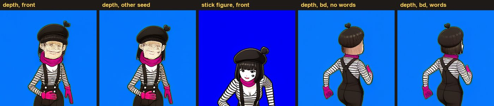
7th step
The strips of MAY-G, MAY-P and MAY-Q, and the puppet's own silhouette.json.
Contact sheets and side-by-side GIFs per view, and three measures: how tall the run stands against the idle, how big the head is, and whether a glove crosses her back.
tools/dl/puppet/may/compare/: *_run.png, *_run.gif, heads.png, measures.json.
Run height against idle height (median of 24 frames). "Truth" is what the 3D puppet itself does in that view; the closer a look gets, the better its walk keeps her size.
| View | Truth (3D) | MAY-G | MAY-P | MAY-Q |
|---|---|---|---|---|
| front | 0.966 | 0.922 | 0.947 | 0.918 |
| front-diagonal | 0.943 | 0.911 | 0.959 | 0.995 |
| side | 0.938 | 0.881 | 0.989 | 0.977 |
| back-diagonal | 0.981 | 0.950 | 0.943 | 0.941 |
| back | 1.015 | 0.938 | 0.963 | 0.933 |
| mean error | — | 0.048 (with two hand-tuned run_scales) | 0.035 | 0.052 |
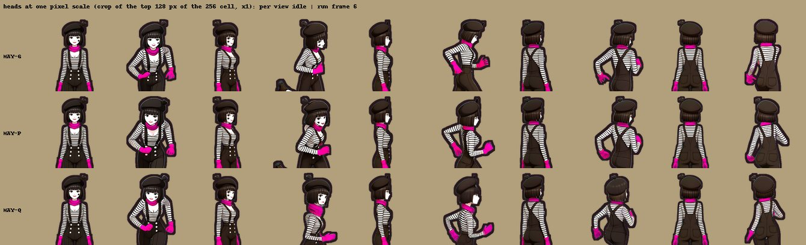
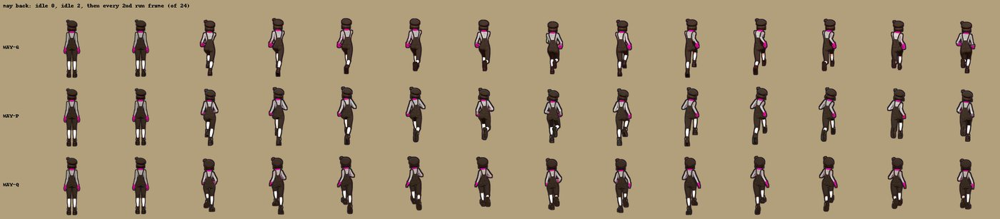
The method works end to end with no human step but the three picks. As a guide for the video model it ties MAY-G's hand-tuned Mixamo drivers and wins where her own proportions matter: the side run keeps her size without a size fix, and the depth walks keep her turned away in the back-diagonal. It is not a clear win yet: MAY-P's front head runs big, P and Q have more rainbow fringes on the sleeves than G, and the depth video carries no face. Those gaps are now settings of the method, all on by default: size from the 3D model, frame by the soles, clean colour fringes and keep the face angle. MAY-R was made with all of them: every view now runs at the 3D model's own height (an average error of 0.005, against 0.035 to 0.052 for the others) and the fringes are gone. Its front and back heads read a little bigger than the others', because framing by the soles makes the figure smaller in the picture.
To see them: install the build from Drive, own every hero from the developer menu, turn on debug mode, open the arena's HERO tab, choose May and tap MAY-G, MAY-P, MAY-Q and MAY-R.
A new puppet look for a hero who has paintings, recommended settings: about 23 minutes of machine time (estimate from the trial's measured stages) and a few minutes of your three picks.
Claude tokens spent on the whole thing: the trial on May ≈ 0.82M, building it into the Level Editor, this page and the MAY-R look ≈ 1.57M. The helpers' share is measured; the lead's own share of about 180k is an estimate.
Claude tokens for every further puppet look. Once the method is in the Level Editor you queue it yourself and the AI server and this PC do the work.
Machine time, added up from the stages measured in the trial: arms-out 4.4 min, shape 3.4 min, rig + run + guides 1 min, walks 9.5–11.5 min, import 1–3 min. All estimates.
| Route | Machine time | Your time |
|---|---|---|
| Recommended: Klein arms-out, Hunyuan3D 2 (two tries), the scripted rig, depth walks + a stick-figure front (MAY-Q) | about 23 min | 3 picks, a few min |
| Stick figures in every view (MAY-P) | about 21 min | the same |
| Arms-out pictures on Flux.2 dev instead of Klein | + 35–70 min | the same |
| A brand-new hero with no paintings yet, stills on Klein | + about 5 min | + checking 13 stills |
| A brand-new hero, stills on Flux.2 dev (as MAY-G) | + about 1.5 h | + checking 13 stills |
| Another walk for a hero who already has a puppet (steps 6–7 only) | about 12–14 min | none |
After a hand fix in Blender (--from-blend, steps 4–7) | about 14–15 min | your fix |
| The trial itself, wall clock (writing the tools, two looks, every fix, the comparison) | 13:37–15:25, about 1 h 50 min | — |
Claude never paints: every picture, clip and 3D model here came from your own AI server. So the local models saved no Claude tokens directly. What they saved is paying a cloud service for each one. Here is every generation the trial made, priced at public cloud prices for the same or the nearest hosted model (read on 13 October 2026; an estimate):
| Generation | Count in the trial | Cloud price | Cost |
|---|---|---|---|
| Klein 9B edits (arms-out) | 10 with 1 reference, 6 with 2 | fal.ai: $0.011 per megapixel in and out → $0.022 / $0.033 | $0.42 |
| Hunyuan3D 2 multi-view shapes | 2 | fal.ai: $0.16 per mesh (no texture) | $0.32 |
| Wan 2.2 Animate clips, 25 frames (1.56 s at 16 fps) | 22 (34 s of video) | fal.ai: $0.04 (480p) to $0.08 (720p) per second | $1.38–2.75 |
| Wan 2.2 Fun Control clips, 49 frames (3.06 s, billed as 4 s) | 8 (32 s billed) | WaveSpeed: $0.04 (480p) to $0.08 (720p) per second, whole seconds | $1.28–2.56 |
| Total | 48 generations | our clips are 640 × 640, between the two price tiers | $3.39–6.05 |
Saved by painting locally, at cloud prices (estimate). Replicate is a little cheaper for Klein ($0.017–0.019) and Hunyuan3D (about $0.10).
The same money in Claude tokens: Opus 5.5, the model this work ran on, costs $4 per million tokens read and $20 per million written. That is 0.85–1.5 million tokens read, or 170,000–300,000 tokens written.
Share of the whole trial's cost that local art saved: the saving in tokens (at $4 per million) against the Claude tokens above plus that saving. It fills in once the token total is entered.
Not counted: MAY-G's own 12 paintings and walks, made the day before; the AI server's electricity for about 50 minutes of work (roughly 0.4 kWh, a few tens of cents at most, a rough estimate). Prices: fal.ai and WaveSpeed model pages, Replicate's model pages for the comparison, Claude's pricing page; all read 13 October 2026. Fun Control is only hosted on WaveSpeed as far as we found; 640 × 640 may bill at either tier.